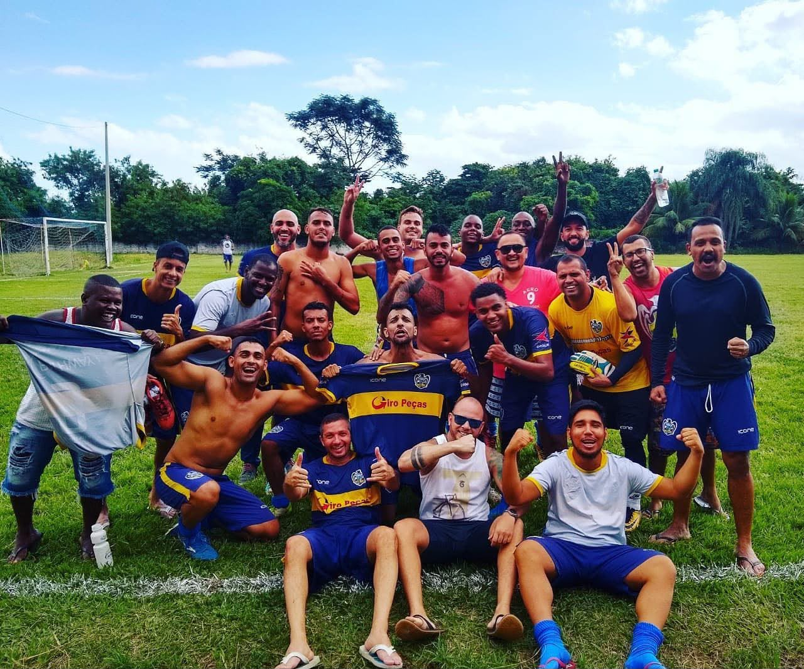

Sobre o Clube
O Pombal Futebol Clube foi fundado por um grupo de amigos e representa com orgulho o bairro de Santa Eugênia, em Nova Iguaçu. Nossas partidas acontecem tradicionalmente aos domingos no campo do quartel do Corpo de Bombeiros.
Com muita garra e união, o time vem fazendo bonito nos campeonatos amadores da Baixada Fluminense!

Destaques do Elenco
Conheça os pilares da nossa equipe:
- Goleiro: Paredão da Baixada
- Zagueiros: Raça e Segurança
- Meio-Campo: Criação e Visão de Jogo
- Atacantes: Artilheiros Invicto
Tabela de Últimos Jogos e Próximos Confrontos
| Data | Adversário | Local | Resultado / Horário |
|---|---|---|---|
| Último Domingo | Moquetá F.C. | Campo dos Bombeiros | Vitória 1 x 0 |
| Próximo Domingo | Conceito F.C. | São João de Meriti | 11:00 hrs |
Faça Parte do Pombal F.C.
Preencha o formulário abaixo para participar das nossas peneiras ou tornar-se um torcedor sócio-apoiador: